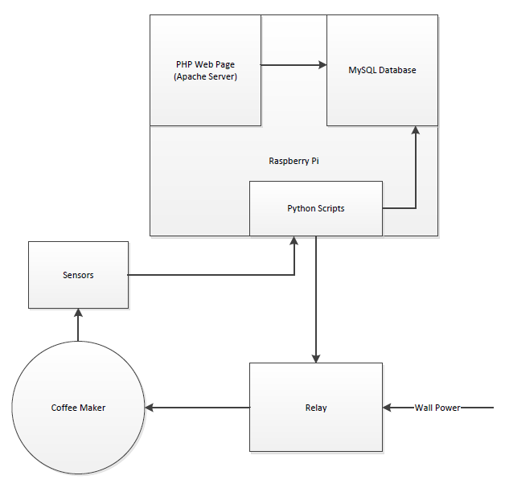
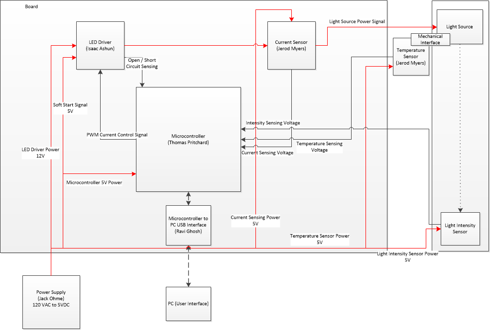
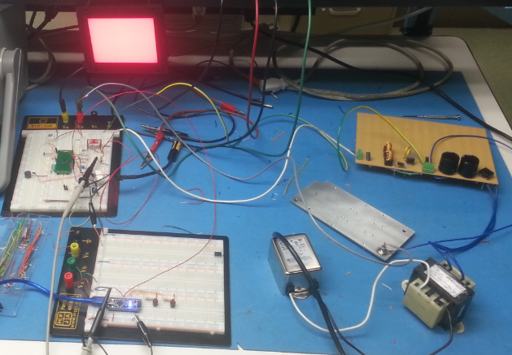
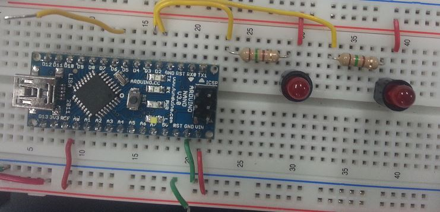
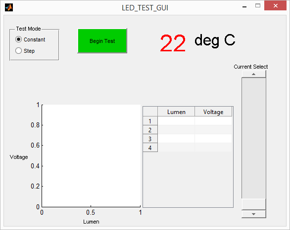

I participated in a Milwaukee Hackathon with my co-workers. In addition to myself,
we had another Software Engineer, an Electrical Engineer, and a Mechanical Engineer.
We won the “Nerdiest Project”. I picked out all the hardware for the project and coded
some Python scripts used to toggle the Raspberry Pi GPIO.
The goal was to create an IoT coffee pot. We wanted to be able to turn the pot on before leaving for the office,
so by the time we arrived we would have hot coffee waiting for us. A secondary feature is that
we could also turn the pot off from home in case we forgot to at the end of the day.
During the 8 hour hackathon we achieved the ability to turn the pot on and off via a cell phone.
This proof of concept proved out our digital datapath infrastructure. At that point we were only limited by
whatever sensors we wanted to harness to the coffee pot. Some value add features we wanted were
- Temperature Sensor - to gauge hotness
- Force Sensor - to gauge fullness
- Optical Sensor - to gauge fullness should the force sensor not work so well (because the coffee pot weighs the same whether the waters in the pot or the reservoir.)
- Switch - to gauge if the pot is in the coffee maker or currently gone.

This project was part of my senior design course in college. We worked with the GE Healthcare - Imaging - Computed Tomography (CT) team.
In a CT machine, radiation rays blast through your body and collide with a special cintilating material on a circuit board. The
more radiation that collides with the cintilating material the more the material glows. The glowing is captured by a photo-diode and related to a voltage
output from the diode. The voltage is captured by an ADC and sent to a reconstruction engine. The information from all the cintilating nodes is combined
to form an image of your body. In this machine an important assumption is made that the relationship between the glowing from the cintilating material
and voltage produced from the diode is linear.
We were tasked with developing a tool to test the lineaerity of the photo-diodes.
We planned to have a power supply, LED Driver, micro-controller, and some sensors. My formal responsibility was the micro-controller design, but I
put a lot of effort into the LED Driver and sensors as well.

The actual protoype was a power supply, an arduino, an LED Driver, current sensor, voltage sensor, and an LED light.

Arduino

We used Matlab's 'GUIde' tool to create a GUI. I programmed the GUI and callbacks to work with the arduino to set the PWM levels to the LED and
sample the voltages and currents generated from the sensors. The final prototype was able to manipulate the lumen output of the LED but we did not
get the prototype to integrate with the lumen sensor.

As part of the micro-controller development I also created a block diagram, schematic, and (admitedly sketchy) PCB layout.
RSP (Really Small Processor)
This project was a lab during my college microprocessors class. We hand wired a really small processor that has two 8 bit data registers,
an ALU (arithmetic logic unit), a dip switch input, a pushbutton input, and 3 LEDs (red yellow green). We wrote some assembly code to create a
security program where you input a code to the dip switch, hit the button, and see if the light turns green or red. Additionally, we programmed
the LEDs to act like a stoplight.